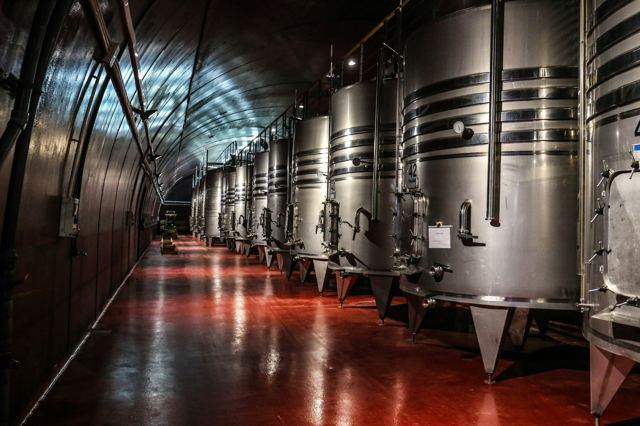
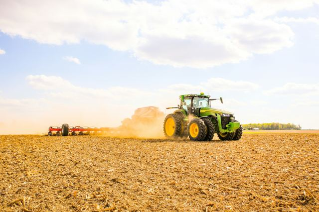

Shiraz from the old block
Picked by hand in early March from our oldest vines, then aged in used oak for fourteen months.
Vintage 2024 · North block
Tallowood Ridge is a small, family-run winery on the Granite Belt, near Stanthorpe. Taste our reds and whites at the cellar door, join the wine club, or order a case online.
Tallowood Ridge started in 2004 with a few rows of Shiraz on a granite slope near Stanthorpe. Today we grow nine grape varieties on 14 hectares, make the wine in our own shed, and pour it at the cellar door seven days a week.

Taste five or six wines at our timber bar, with a plate of local cheese if you like.
Find out moreFour boxes a year, picked by our winemaker and sent to your door.
Find out more
Order single bottles or cases and have them sent anywhere in Australia.
Find out more

Picked by hand in early March from our oldest vines, then aged in used oak for fourteen months.
Vintage 2024 · North blockA firm, dark red grown on the granite. It suits a slow dinner and a few years in the cellar.
Vintage 2023 · Top paddockPicked cool and early in the morning, then kept in stainless steel so it stays fresh and light.
Vintage 2025 · Creek blockPart of the wine sat in oak for six months. The rest stayed in steel. We blended them in spring.
Vintage 2024 · Ridge blockOur first sparkling, bottled in the shed and left for two years before we poured the first glass.
Vintage 2023 · Made in the wineryA small batch for cold nights by the cellar door fire. It sells out each July.
Vintage 2024 · Cellar release14 hectares of vines, picked by hand at vintage.
Small tanks and oak barrels, so each block is made on its own.
A timber bar, a courtyard and a lawn, open seven days.
Pick a tasting, a tour or a table.
Online or by phone. Walk-ins are welcome.
Park by the barn and come to the bar.
Buy by the bottle, the case or a club box.
Granite Belt, near Stanthorpe QLD
Open daily, 10am to 4pm
Friendly staff and an easy tasting. We came for an hour and stayed for lunch.
The wine club box arrived on time and the notes made it easy to pick a wine for dinner.
Our family lunch in the barn ran smoothly. The team knew what they were doing.
Not for small groups. Walk in any day. If there are eight or more of you, please book so we can set up the bar.
Yes. The fee is shown on the booking page, and it comes off any bottles you buy on the day.
Children are welcome with an adult. Dogs on leads are welcome in the courtyard.
You get four boxes a year. You choose reds, whites or both, and you can pause or cancel whenever you like.
Tell us the day and how many are coming. We will reply the same day.